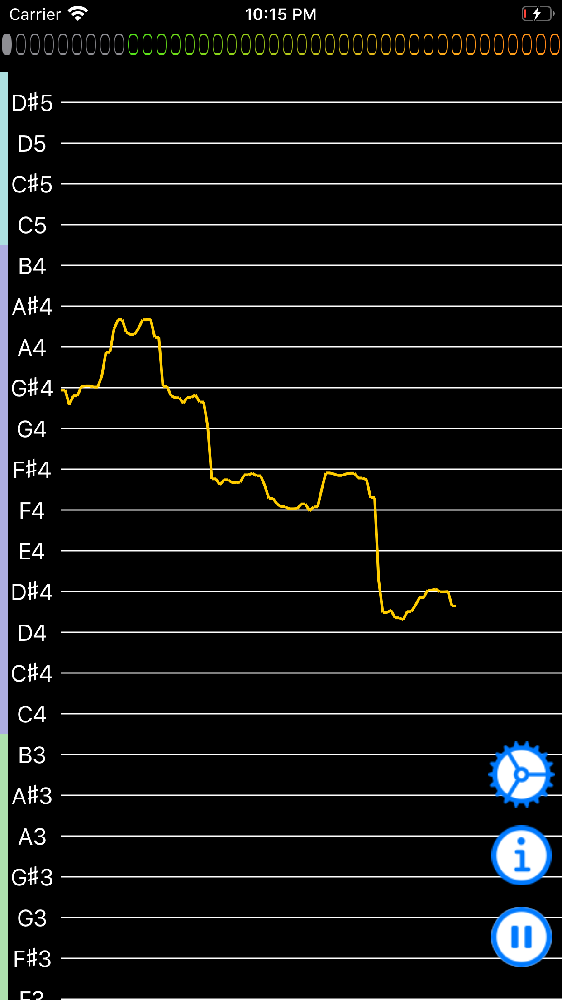
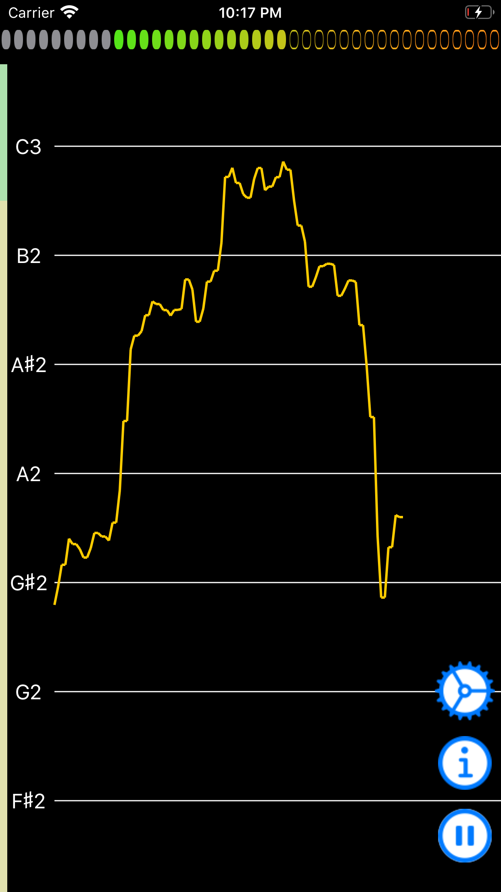
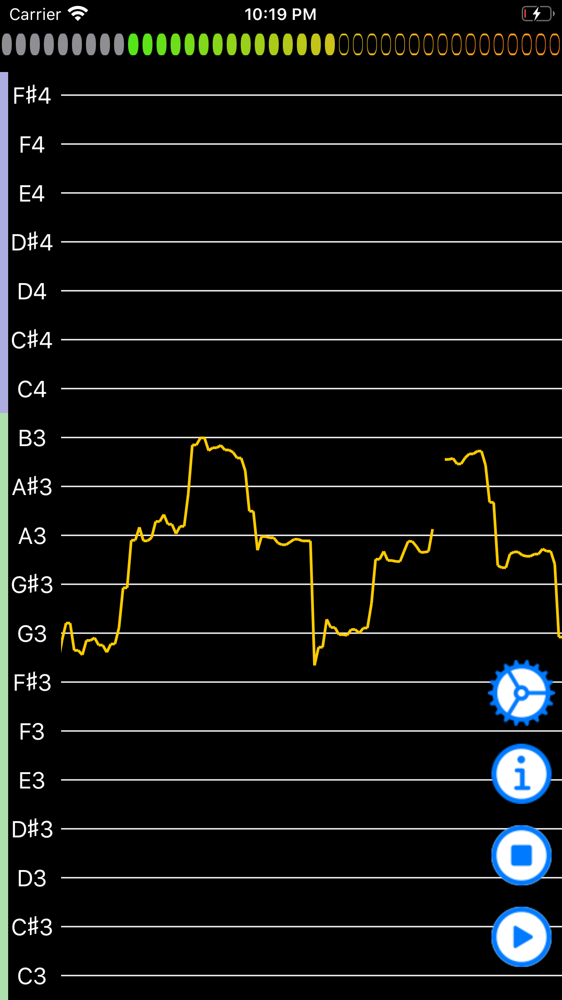
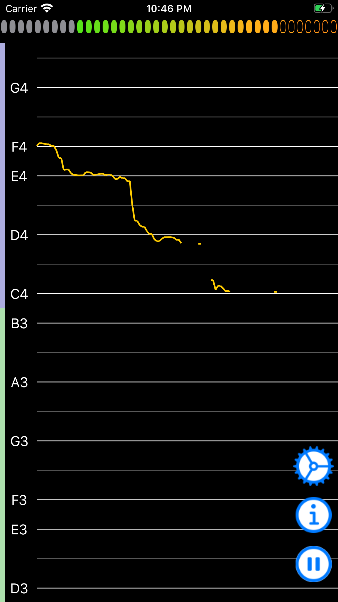
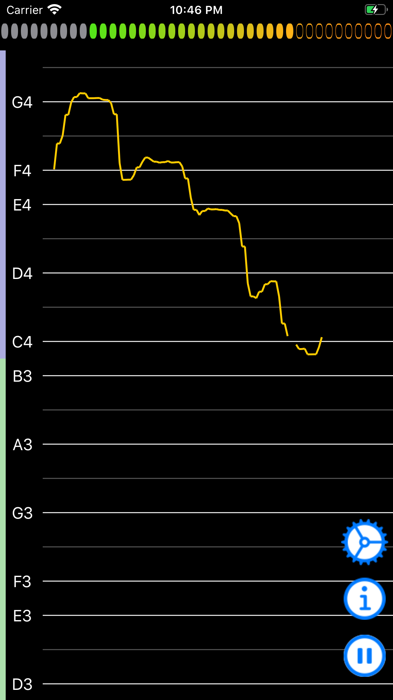
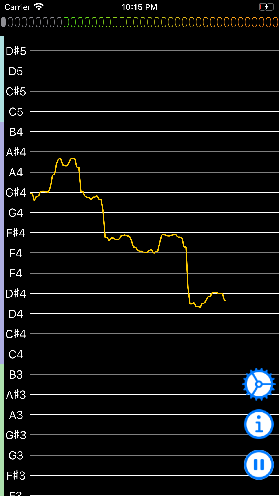
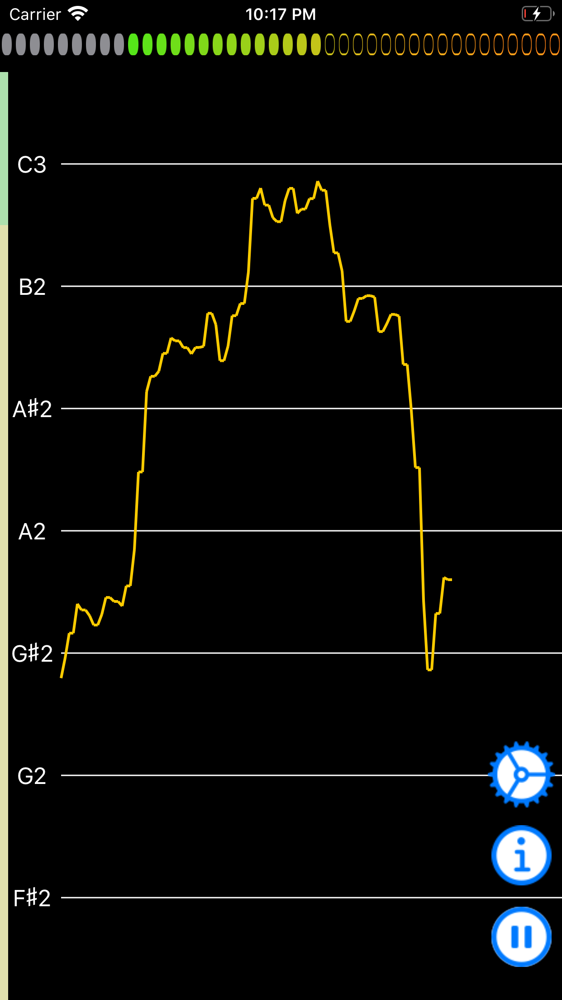
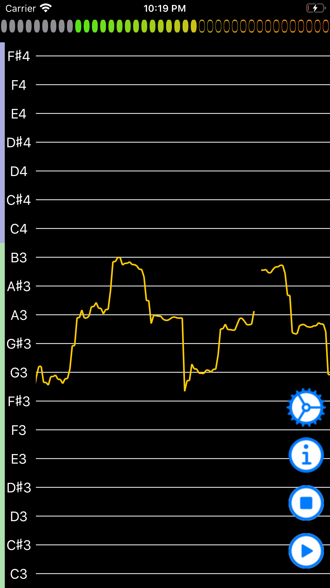
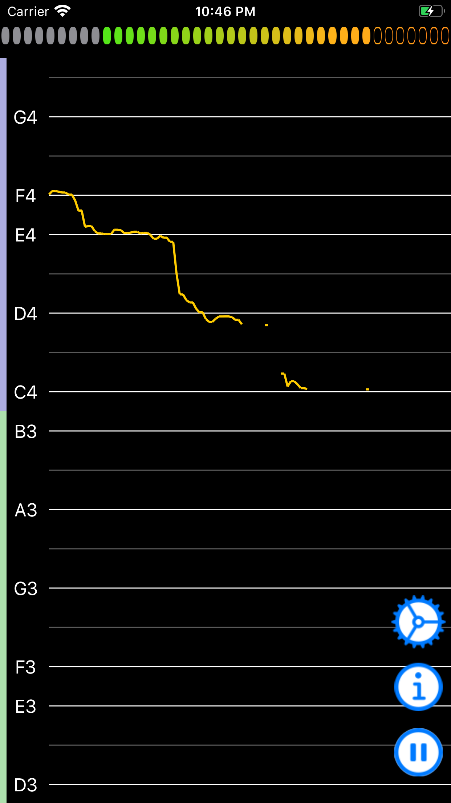
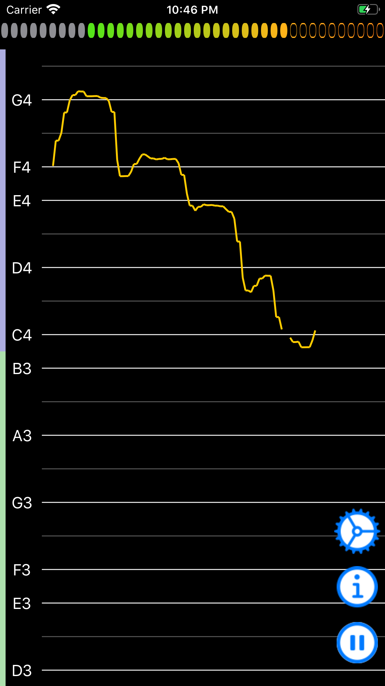

音の高さを軌跡で確認できるチューナーです。
iPhoneの内蔵マイクで拾った音の高さを、軌跡として画面に表示します。iPhoneに向けて歌ってみると、音の外しやしゃくりなど、一目瞭然です。
○基本的な機能
・上下にスクロールして、任意の音の高さを確認できる。
・軌跡を記録する速さを設定できる。
・表示する音の範囲を設定し、無駄なスクロールを避けられる。
・必要最低入力値を設定し、環境音の大きな場所でも必要な音だけ確認できる。
・上下方向に拡大/縮小できる。
・目的の曲に合わせて音階（調）の表示を設定できる。
・キャリブレーション（A4∝440Hzや442Hzなど）を設定できる。
・軌跡を記録し、横にスクロールして復習できる。
・記録がたまり動作が重くなった場合は、記録を消去して動作を軽くすることができる。
○アプリ内課金
・広告を非表示にできる（¥120）。
VocalTuner
 








